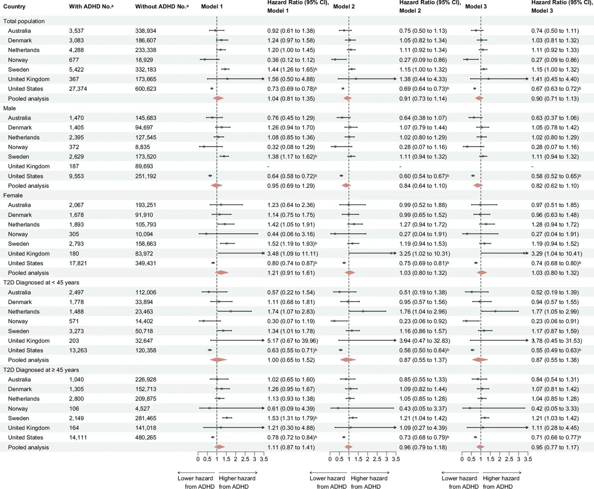

Диабет және АЖБ: зейін тапшылығы жүрек аурулары қаупіне қалай әсер етеді


Суреттің толық сипаттамасы
Әр түрлі елдерде 2-типті қант диабеті диагнозы қойылғаннан кейін ДЗГБ (ADHD) мен алғаш рет пайда болған ірі жүрек-қан тамырлары асқынулары (MACE) арасындағы байланыс. Қысқартулар: 2-ТҚД: 2-типті қант диабеті; ДЗГБ: зейін тапшылығы және гиперактивтілік бұзылысы. Ескертпе: 1-модель жынысы, жасы және 2-ТҚД диагнозы қойылған күнтізбелік жыл бойынша түзетілген; 2-модель қосымша психикалық бұзылыстар тарихы, психотроптық препараттар мен кардиометаболикалық препараттарды қолдану бойынша түзетілген; 3-модель қосымша бақылау кезеңінде диабетке қарсы препараттарды қолдану бойынша түзетілген. Біріктірілген талдауда барлық елдерден алынған әсер өлшемдерін біріктіру үшін кездейсоқ әсерлер моделі қолданылды. aNo. зерттеу соңында ДЗГБ диагнозы қойылған (немесе қойылмаған) немесе ДЗГБ дәрілерін қабылдаған (немесе қабылдамаған) ересектер санын білдіреді. bЖалған жаңалықтар деңгейіне түзету енгізілгеннен кейін статистикалық тұрғыдан маңызды.
Зейін тапшылығы және гиперактивтілік синдромы (АЖБ) көбінесе 2-типті диабетпен қатар жүреді және денсаулықты бақылауда қосымша қиындықтар тудырады. Ғалымдар инфаркт, инсульт және ерте өлім қаупін түсіну үшін екі миллионға жуық науқастың деректерін талдады. АЖБ болуы жалпы өлім-жітімді айтарлықтай арттыратыны, ал жас науқастарда бұл синдромға арналған дәрі-дәрмектерді қабылдау ерекше назар аударуды талап ететіні анықталды.
Басты ойлар
- 2-типті диабеті бар науқастарда АЖБ жалпы өлім қаупін арттырады.
- Жас науқастарда АЖБ дәрілерін қабылдау жүрек-қан тамырлары оқиғаларымен байланысты.
- Диабет пен психикалық ауруларды емдеуде кешенді тәсіл маңызды.
Толығырақ
Халықаралық когорталық зерттеуге 2010-2020 жылдар аралығында жеті елде (Австралия, Дания, Нидерланды, Норвегия, Швеция, Ұлыбритания және АҚШ) 2-типті диабет (2ТД) диагнозы қойылған 1 929 027 ересек адам қатысты. Зерттеушілер жүрек-қан тамырларының күрделі оқиғаларын (MACE: миокард инфарктісі, инсульт немесе жүрек-қан тамырлары ауруларынан болатын өлім) және жалпы өлім-жітімді бағалау үшін Кокс пропорционалды қауіп модельдерін қолданды. АЖБ мәртебесі диагноз немесе рецептуралық препараттарды алу фактісі бойынша анықталды.
Нәтижелер 2ТД және АЖБ бар науқастарда жалпы өлім қаупі жоғары екенін көрсетті (қауіп қатынасы HR 2,42; 95% CI 1,72–3,41), алайда жалпы топта MACE-пен тікелей байланыс анықталмады. Маңызды клиникалық бақылау диабеті ерте басталған (45 жасқа дейін) науқастарда АЖБ препараттарын қабылдау MACE жиілігінің артуымен байланысты болды (HR 1,58; 95% CI 1,18–2,10). Бұл деректер метаболикалық бұзылыстары бар науқастар үшін соматикалық және психиатриялық көмекті біріктіру қажеттілігін көрсетеді.
Шектеулер
Зерттеу бақылау сипатында болғандықтан, өмір салты факторларының жүрек-қан тамырлары қаупіне әсерін толық жоққа шығару мүмкін емес.
Мақаланың толық аудармасы
Түйіндеме
Өзектілігі. Назар тапшылығы және гиперактивтілік бұзылысы (НТГБ) 2-типті қант диабетінің (2-ТҚД) жоғары қаупімен байланысты. Алайда, НТГБ және оны емдеуге арналған препараттарды қолданудың 2-ТҚД кезіндегі болжам мен денсаулық нәтижелеріне әсері әлі де түсініксіз. Бұл зерттеу (1) НТГБ және (2) НТГБ препараттарын қолданудың 2-ТҚД диагнозынан кейінгі ірі жағымсыз жүрек-қан тамыр оқиғалары (MACE) және жалпы өлім-жітім көрсеткіштерімен байланысын зерттейді.
Әдістері. Бұл көпұлтты когорталық зерттеуде Австралия, Дания, Нидерланды, Норвегия, Швеция, Ұлыбритания және АҚШ-тың популяциялық деректері пайдаланылды. Стандартталған аналитикалық хаттаманы қолдана отырып, біз 2010-2020 жылдар аралығында алғаш рет 2-ТҚД диагнозы қойылған ересектерді анықтадық. Әсер ету факторлары (1) НТГБ (диагноз немесе дәрі-дәрмектерді тағайындау арқылы анықталған) және (2) НТГБ бар ересектер арасында НТГБ препараттарын қолдану болды; екеуі де уақытқа тәуелді факторлар ретінде талданды. Негізгі нәтижелер 2-ТҚД диагнозынан кейінгі MACE (жедел миокард инфарктісі, инсульт немесе жүрек-қан тамыр ауруларына байланысты өлім) және жалпы өлім-жітім болды. Себепке негізделген Кокс модельдері 95% сенімділік интервалдарымен (CI) қауіп коэффициенттерін (HR) бағалады; нәтижелер кездейсоқ әсерлер мета-талдауы арқылы біріктірілді және жасы мен жынысы бойынша стратификацияланды.
Маңызды
2-ТҚД және НТГБ бар ересектерде жалпы өлім-жітім қаупі жоғары (HR 2,42), ал НТГБ препараттарын қолдану 2-ТҚД ерте басталған (45 жасқа дейін, HR 1,58) науқастарда MACE қаупінің артуымен байланысты.
Нәтижелері. Когортаға 2-ТҚД бар 1 929 027 ересек адам кірді (909 176 [47,1%] ер адам). Біріктірілген талдауларда 2-ТҚД және НТГБ бар ересектерде 2-ТҚД диагнозынан кейін жалпы өлім-жітім деңгейі жоғары (HR 2,42; 95% CI 1,72–3,41), бірақ MACE деңгейі жоғары емес (HR 1,04; 95% CI 0,81–1,35) екені анықталды. 2-ТҚД және НТГБ бар ересектер арасында НТГБ препараттарын қолдану 45 жасқа дейін 2-ТҚД диагнозы қойылғандарда MACE деңгейінің жоғары болуымен байланысты болды (HR 1,58; 95% CI 1,18–2,10). Бұл байланыстар жыныс, жас, 2-ТҚД диагнозы қойылған күнтізбелік жыл, психиатриялық анамнез, басқа психотроптық препараттар мен кардиометаболикалық дәрілерді қолдануға түзету енгізгеннен кейін де тұрақты болып қалды.
Қорытынды. 2-ТҚД және қатар жүретін НТГБ бар ересектерде 2-ТҚД диагнозынан кейін жалпы өлім-жітім қаупінің артқаны анықталды, ал НТГБ барлық елдерде MACE-пен дәйекті түрде байланысты болмады. НТГБ препараттарын қолдану 2-ТҚД ерте басталған ересектерде MACE деңгейінің жоғары болуымен байланысты болды. Бұл нәтижелер интеграцияланған соматикалық-психиатриялық көмектің қажеттілігін және MACE пен өлім-жітімді азайтуға көмектесетін НТГБ препараттарын қолдануды мұқият қарастыру қажеттілігін көрсетеді, әсіресе жас кезінде басталған 2-ТҚД жағдайында.
Назар тапшылығы және гиперактивтілік бұзылысы (НТГБ) — күнделікті қызметті бұзатын тұрақты зейін тапшылығымен, гиперактивтілікпен және импульсивтілікпен сипатталатын нейро даму жағдайы. НТГБ мектеп жасындағы балалардың шамамен 5%-ында диагноз қойылады және кем дегенде үштен екісінде ересек жаста да қызметті бұзатын симптомдар сақталады [1]. НТГБ препараттарын, стимуляторларды да, стимулятор еместерді де қолдану соңғы онжылдықтарда айтарлықтай өсті [2] және көпұлтты зерттеу НТГБ бар адамдардың 30-60%-ы бес жылға дейін емделуде қалатынын көрсетті [3]. Ірі бақылау зерттеулерінен алынған дәлелдер НТГБ-ның инсулинге төзімділікпен және тұрақты гипергликемиямен сипатталатын жалпы метаболикалық ауру — 2-типті қант диабеті (2-ТҚД) қаупінің екі есе артуымен байланысты екенін көрсетеді [4–7].
Түсіндірме
2-ТҚД ағзаның инсулинді тиімді пайдалана алмауымен сипатталады, бұл қандағы қант деңгейінің созылмалы жоғары болуына әкеледі, ал MACE — ең қауіпті жүрек-қан тамыр асқынуларына арналған жалпы термин.
2-ТҚД жүрек-қан тамыр аурулары (ЖҚТА) [8] және өлім-жітім [9], әсіресе миокард инфарктісі, инсульт және жүрек-қан тамыр өлімін қамтитын ірі жағымсыз жүрек-қан тамыр оқиғалары (MACE) үшін жақсы белгіленген қауіп факторы болып табылады [10]. 2-ТҚД кезіндегі бұл нәтижелер көбінесе семіздік, дислипидемия және гипертензия сияқты кардиометаболикалық қауіп факторларымен байланысты [8]. Ірі популяциялық зерттеулер де НТГБ-ның ЖҚТА [11] және жалпы өлім-жітіммен [12] байланысты екенін анықтады. Екінші жағынан, НТГБ препараттарының ұзақ мерзімді денсаулыққа әсері белгісіз болып қалуда. Қызығы, зерттеулер ұзақ мерзімді қолдану ЖҚТА қаупін арттыруы мүмкін екенін [13,14], бірақ дәрі-дәрмектерді бастау кездейсоқ жарақаттар, суицид және кездейсоқ уланулармен байланысты табиғи емес өлімді азайтуы мүмкін екенін көрсетті [15].
2-ТҚД-ны тиімді басқару дәрі-дәрмектерді сақтауды, өмір салтын өзгертуді, қандағы глюкозаны жүйелі түрде бақылауды және тұрақты медициналық тексерулерді талап етеді [16]. Бұл талаптар ұйымдастырушылықты, жоспарлауды және тұрақты назар аударуды талап етеді [17], бұл НТГБ бар адамдар үшін әсіресе қиын. Соған қарамастан, НТГБ-ның 2-ТҚД нәтижелеріне әсері туралы дәлелдер шектеулі және қайшылықты болып қалуда. Бір шағын зерттеу (n = 315) 2-ТҚД бар адамдарда НТГБ-ға ұқсас симптомдар мен гемоглобин A1c (HbA1c), липидтік профиль немесе есептелген шумақтық сүзілу жылдамдығы (eGFR) арасында ешқандай байланыс жоқтығын хабарлады [18], ал басқа бір ірірек зерттеу (n = 3164) 2-ТҚД және НТГБ қатар жүретін адамдарда гликемиялық бақылаудың нашар екенін анықтады [19].
2-ТҚД бар адамдарда ЖҚТА және жалпы өлім-жітім қаупі жоғары екенін және НТГБ дербес түрде осындай жағымсыз нәтижелермен байланысты екенін және диабетті өздігінен басқаруға кедергі келтіруі мүмкін екенін ескерсек, НТГБ-ның 2-ТҚД бар адамдарда бұл қауіптерді қаншалықты күшейтетінін анықтау маңызды. Бұл қарым-қатынасты түсіну осы популяциядағы нәтижелерді жақсарту үшін интеграцияланған және мақсатты күтім стратегияларын хабарлауы мүмкін. Бұл зерттеуде біз жеті елден алынған ұлттық әкімшілік немесе тізілім деректерін пайдалана отырып, 2-ТҚД диагнозы қойылған, НТГБ бар және жоқ ересектердің MACE және жалпы өлім-жітім деңгейінде қаншалықты ерекшеленетінін зерттедік. Сондай-ақ, біз НТГБ препараттарын қолданудың 2-ТҚД және НТГБ қатар жүретін адамдарда MACE және жалпы өлім-жітім деңгейімен қаншалықты байланысты екенін тексердік.
Нәтижелер
Когорта сипаттамалары
Шеттету критерийлерін қолданғаннан кейін, бастапқы деректер 2010-2020 жылдар аралығында жеті елден 2-типті қант диабетімен (2-типті ҚД) ауыратын 1 929 027 ересек адамды (909 176 [47,1%] ер адам) қамтыды (Қосымша файл 1: Кесте S7), олардың ішінде 44 748-інде (2,3%) бақылау соңында АДГБ (зейін тапшылығы және гиперактивтілік бұзылысы) анықталды. АДГБ бар адамдар арасында 33 301 (74,4%) жағдай бастапқы кезеңде немесе оған дейін анықталған (Қосымша файл 1: Кесте S8). Бастапқы кезеңнен кейін анықталғандар арасында, бақылау басталғаннан бастап алғашқы тіркелген АДГБ диагнозына дейінгі орташа уақыт елдер бойынша 2,0 жылдан 5,7 жылға дейін өзгерді (Қосымша файл 1: Кесте S9). Ер адамдардың үлесі АДГБ тобында АДГБ жоқ топқа қарағанда төменірек болды (40,2% және 47,3%). АДГБ бар ересектер 2-типті ҚД диагнозы қойылған кезде (медианалық диапазон: 34-50 жас) АДГБ жоқ адамдарға (39-62 жас) қарағанда жасырақ болды. Барлық елдерде АДГБ бар ересектерде АДГБ жоқ адамдарға қарағанда психиатриялық коморбидтіліктер және психотроптық дәрілік заттарды қолдану жиірек байқалды (Кесте 1). Бақылау ұзақтығының медианасы АДГБ тобында 2,2 жылдан 3,9 жылға дейін, ал АДГБ жоқ топта 2,8 жылдан 5,5 жылға дейін өзгерді. Бақылау кезеңінде 120 439 ересек адамда (6,2%) MACE (ірі жүрек-қантамыр асқынулары) орын алды және 115 945-і (6,0%) қайтыс болды. Жүрек-қантамыр аурулары (ЖҚА) салдарынан болатын өлім MACE жағдайларының 7,6%-28,5%-ын және барлық өлім жағдайларының 2,0%-29,2%-ын құрады, АҚШ-ты қоспағанда, онда ЖҚА өлімі барлық өлімнің айтарлықтай жоғары үлесін (95,8%) құрады (Қосымша файл 1: Кесте S10). АДГБ дәрілік заттарын талдауға арналған бастапқы сипаттамалар (Қосымша файл 1: Кесте S11) және когортаға кіру кезіндегі АДГБ мәртебесі бойынша стратификацияланған деректер (Қосымша файл 1: Кесте S12) қосымша материалдарда берілген.
Маңызды
2-типті ҚД бар 1,9 миллион ересек адам когортасында АДГБ таралуы 2,3%-ды құрады; АДГБ бар науқастар жасырақ, психиатриялық ілеспе аурулары көбірек және психотроптық дәрілік заттарды жиі қабылдаған.
АДГБ-ның MACE және барлық себептер бойынша өліммен ассоциациясы
Біріктірілген деректер үшін АДГБ MACE-пен ассоциацияны көрсетпеді (Модель 1: HR, 1,04; 95% CI, 0,81-1,35; Сурет 1); елдер арасындағы гетерогенділік айтарлықтай және жоғары болды (MACE: p < 0,0001, I² = 94,4% [95% CI, 90,9%-96,6%]). Швецияда АДГБ MACE деңгейінің жоғарылауымен статистикалық тұрғыдан айтарлықтай байланысты болды (HR, 1,44; 95% CI, 1,26-1,65; p < 0,002), ал АҚШ-та АДГБ MACE деңгейінің төмендеуімен байланысты болды (HR, 0,73; 95% CI, 0,69-0,78; p < 0,002). Басқа елдерде статистикалық тұрғыдан айтарлықтай ассоциациялар байқалмады (HR диапазоны, 0,36-1,56; Сурет 1). Модель 2 және 3-те психиатриялық коморбидтіліктерді, психотроптық және кардиометаболикалық дәрілік заттарды қолдануды ескере отырып, қосымша түзетулер енгізілгеннен кейін ассоциациялар әлсіреді (Сурет 1). Біріктірілген талдау көрсеткендей, жынысты, жасты және 2-типті ҚД диагнозы қойылған күнтізбелік жылды түзеткеннен кейін (Модель 1), АДГБ бар ересектерде АДГБ жоқ адамдарға қарағанда барлық себептер бойынша өлім деңгейі екі еседен астам өскен (HR, 2,42; 95% CI, 1,72-3,41; p < 0,002; Сурет 2). Барлық себептер бойынша өліммен байланыс психиатриялық бұзылыстарды, психотроптық және кардиометаболикалық дәрілік заттарды қолдануды (Модель 2: HR, 1,76; 95% CI, 1,23-2,52; p < 0,002) және диабетке қарсы дәрілік заттарды қолдануды (Модель 3: HR, 1,71; 95% CI, 1,21-2,43; p < 0,002; Сурет 2) қосымша түзеткенде әлсіреді, бірақ айтарлықтай болып қалды. Елдер арасындағы гетерогенділік айтарлықтай және жоғары болды (p < 0,0001, I² = 95,8% [95% CI, 93,3-97,3%]). Ел бойынша талдауда АДГБ Швеция, Нидерланды, Дания және АҚШ-та барлық үш модель бойынша барлық себептер бойынша өлім деңгейінің жоғарылауымен статистикалық тұрғыдан айтарлықтай байланысты болды (Модель 3: HR диапазоны, 1,53-3,81; Сурет 2).
Суреттің толық сипаттамасы
Әр түрлі елдерде 2-типті қант диабеті диагнозы қойылғаннан кейін ДЗГБ (ADHD) мен алғаш рет пайда болған ірі жүрек-қан тамырлары асқынулары (MACE) арасындағы байланыс. Қысқартулар: 2-ТҚД: 2-типті қант диабеті; ДЗГБ: зейін тапшылығы және гиперактивтілік бұзылысы. Ескертпе: 1-модель жынысы, жасы және 2-ТҚД диагнозы қойылған күнтізбелік жыл бойынша түзетілген; 2-модель қосымша психикалық бұзылыстар тарихы, психотроптық препараттар мен кардиометаболикалық препараттарды қолдану бойынша түзетілген; 3-модель қосымша бақылау кезеңінде диабетке қарсы препараттарды қолдану бойынша түзетілген. Біріктірілген талдауда барлық елдерден алынған әсер өлшемдерін біріктіру үшін кездейсоқ әсерлер моделі қолданылды. aNo. зерттеу соңында ДЗГБ диагнозы қойылған (немесе қойылмаған) немесе ДЗГБ дәрілерін қабылдаған (немесе қабылдамаған) ересектер санын білдіреді. bЖалған жаңалықтар деңгейіне түзету енгізілгеннен кейін статистикалық тұрғыдан маңызды.

Суреттің толық сипаттамасы
Әр түрлі елдерде 2-типті қант диабеті диагнозы қойылғаннан кейін ДЗГБ мен барлық себептер бойынша өлім-жітім арасындағы байланыс. Қысқартулар: 2-ТҚД: 2-типті қант диабеті; ДЗГБ: зейін тапшылығы және гиперактивтілік бұзылысы. Ескертпе: 1-модель жынысы, жасы және 2-ТҚД диагнозы қойылған күнтізбелік жыл бойынша түзетілген; 2-модель қосымша психикалық бұзылыстар тарихы, психотроптық препараттар мен кардиометаболикалық препараттарды қолдану бойынша түзетілген; 3-модель қосымша бақылау кезеңінде диабетке қарсы препараттарды қолдану бойынша түзетілген. Біріктірілген талдауда барлық елдерден алынған әсер өлшемдерін біріктіру үшін кездейсоқ әсерлер моделі қолданылды. aNo. зерттеу соңында ДЗГБ диагнозы қойылған (немесе қойылмаған) немесе ДЗГБ дәрілерін қабылдаған (немесе қабылдамаған) ересектер санын білдіреді. bЖалған жаңалықтар деңгейіне түзету енгізілгеннен кейін статистикалық тұрғыдан маңызды.
Түсіндірме
HR (қауіп қатынасы) АДГБ бар топта оқиға қаупі АДГБ жоқ топқа қарағанда қаншалықты жоғары немесе төмен екенін көрсетеді; 95% CI (сенім аралығы) бағалаудың дәлдігін көрсетеді.
АДГБ дәрілік заттарының MACE және барлық себептер бойынша өліммен ассоциациясы
АДГБ бар ересектер арасында (n = 33 301) біріктірілген талдаулар АДГБ дәрілік заттарын қолдану мен MACE немесе барлық себептер бойынша өлім арасында айтарлықтай ассоциацияларды көрсетпеді (Сурет 3 және 4). Елдер арасындағы гетерогенділік айтарлықтай болмады (MACE: p = 0,34, I² = 12% [95% CI, 0-81,7%]; барлық себептер бойынша өлім: p = 0,18, I² = 33,1% [95% CI, 0-71,6%]). Ел бойынша талдаулар да MACE (HR диапазоны, 0,89-1,36) немесе барлық себептер бойынша өлім (HR диапазоны, 0,56-1,75) үшін айтарлықтай ассоциацияларды көрсетпеді.

Суреттің толық сипаттамасы
Әр түрлі елдерде 2-типті қант диабеті диагнозы қойылғаннан кейін ДЗГБ дәрілерін қолдану мен алғаш рет пайда болған ірі жүрек-қан тамырлары асқынулары (MACE) арасындағы байланыс. Қысқартулар: 2-ТҚД: 2-типті қант диабеті. Ескертпе: 1-модель жынысы, жасы және 2-ТҚД диагнозы қойылған күнтізбелік жыл бойынша түзетілген; 2-модель қосымша психикалық бұзылыстар тарихы, психотроптық препараттар мен кардиометаболикалық препараттарды қолдану бойынша түзетілген; 3-модель қосымша бақылау кезеңінде диабетке қарсы препараттарды қолдану бойынша түзетілген. Біріктірілген талдауда барлық елдерден алынған әсер өлшемдерін біріктіру үшін кездейсоқ әсерлер моделі қолданылды. aЖалған жаңалықтар деңгейіне түзету енгізілгеннен кейін статистикалық тұрғыдан маңызды.

Суреттің толық сипаттамасы
Әр түрлі елдерде 2-типті қант диабеті диагнозы қойылғаннан кейін ДЗГБ дәрілерін қолдану мен барлық себептер бойынша өлім-жітім арасындағы байланыс. Қысқартулар: 2-ТҚД: 2-типті қант диабеті. Ескертпе: 1-модель жынысы, жасы және 2-ТҚД диагнозы қойылған күнтізбелік жыл бойынша түзетілген; 2-модель қосымша психикалық бұзылыстар тарихы, психотроптық препараттар мен кардиометаболикалық препараттарды қолдану бойынша түзетілген; 3-модель қосымша бақылау кезеңінде диабетке қарсы препараттарды қолдану бойынша түзетілген. Біріктірілген талдауда барлық елдерден алынған әсер өлшемдерін біріктіру үшін кездейсоқ әсерлер моделі қолданылды. aЖалған жаңалықтар деңгейіне түзету енгізілгеннен кейін статистикалық тұрғыдан маңызды.
Топшалық талдаулар
Біріктірілген талдаулар АДГБ-ның MACE және барлық себептер бойынша өліммен ассоциациялары жыныс және жас топтары бойынша дәйекті болғанын көрсетті (Сурет 1 және 2). АДГБ дәрілік заттары үшін нәтижелер жыныс бойынша да салыстырмалы болды (Сурет 3 және 4). Жас бойынша стратификацияланғанда, жасырақ топта (18-44 жас) MACE деңгейінің жоғарылығы анықталды, бұл Модель 2-де көптеген тестілеу түзетуінен кейін статистикалық тұрғыдан айтарлықтай ассоциацияға ие болды (HR, 1,58; 95% CI, 1,18-2,10; Сурет 3).
Психиатриялық коморбидтілік, n (%)
1 058 (29,9) 21 301 (6,3) 1 016 (33,0) 12 536 (6,7) 1 839 (42,9) 16 946 (7,3) 222 (32,8) 1 296 (6,8) 3 304 (60,9) 24 855 (7,5) (40,3) 24 744 (14,2) 12 133 (44,3) 106 163 (17,7)
Психотроптық препараттарды қолдану, n (%) 2 199 (62,2) 80 039 (23,6) 1 487 (48,2) 35 864 (19,2) (13,6) 10 592 (4,5) 393 (58,1) 5 467 (28,9) 3 280 (60,5) 65 883 (19,8) (47,7) 46 380 (26,7) 9 913 (36,2) 88 787 (14,8)
Кардиометаболикалық препараттарды қолдану, n (%)
3 348 (94,7) 317 190 (93,6) (29,6) 96 480 (51,7) 4 288 (100,0) 233 338 (100,0) (6,4) 3 424 (18,1) 1 101 (20,3) 135 379 (40,8) (79,6) 134 046 (77,2) 4 799 (17,5) 104 529 (17,4)
Қысқартулар: T2D — 2-типті қант диабеті, ADHD — зейін тапшылығы және гиперактивтілік синдромы, MACE — ірі жағымсыз жүрек-қантамыр оқиғалары, IQR — кварталаралық ауқым. aБақылау кезеңінің соңында ADHD бар және жоқ ересектер (MACE нәтижесі үшін).
Сезімталдық талдаулары. Деректердің шектеулі болуына байланысты, клиникалық диагноз қойылған T2D-мен шектелген сезімталдық талдаулары тек Швеция мен Ұлыбританияда жүргізілді. Бұл талдауларда біз ADHD мен MACE арасында статистикалық маңызды байланысты байқадық (1-модель: HR, 1,48; 95% CI, 1,24–1,77; p < 0,002), дегенмен бұл байланыс коморбидтілік пен дәрі-дәрмектерді қолдану бойынша түзетулерден кейін маңызды болмай қалды (Кесте SN 13). Барлық себептер бойынша өлім-жітім көрсеткіштері үшін эффект бағалаулары іс жүзінде өзгерген жоқ, бұл бір-бірінің үстіне түсетін сенімділік интервалдарымен расталады (Кесте SN 14). ADHD тек клиникалық диагнозбен анықталған сезімталдық талдауларында MACE және барлық себептер бойынша өлім-жітімнің эффект бағалаулары негізгі талдаудағылармен салыстырмалы болды (Кесте SN 13–16). Бағалаулар 65 жастан кейін T2D диагнозы қойылған ересектерді алып тастағаннан кейін (Кесте SN 13–16) және әлеуметтік-экономикалық мәртебе (SES) бойынша түзетулерден кейін (Кесте SN 13–16) тұрақты болып қалды. ADHD бастапқы деңгейге дейін анықталған сезімталдық талдауларында MACE және барлық себептер бойынша өлім-жітімнің эффект бағалаулары негізгі талдаудағылармен салыстырмалы болды (Кесте SN 13–14).
Маңызды
Сезімталдық талдаулары негізгі нәтижелердің тұрақтылығын растады, бұл ADHD мен MACE арасындағы байланыстың әртүрлі диагностикалық критерийлер мен әлеуметтік-экономикалық факторлар бойынша түзетулер енгізілгенде де сақталатынын көрсетті. [!tip] Сезімталдық талдауы — бұл зерттеу қорытындыларының бастапқы болжамдар немесе деректерді іріктеу критерийлері өзгерген кезде қаншалықты өзгеретінін тексеру әдісі, ол нәтижелердің сенімділігін бағалауға көмектеседі.
Талқылау
Бұл ауқымды көпұлтты когорталық зерттеуде 2-типті қант диабеті (2-ТҚД) және қатар жүретін АДГБ (зейін тапшылығы және гиперактивтілік бұзылысы) бар ересектерде АДГБ жоқ адамдарға қарағанда барлық себептер бойынша өлім-жітім деңгейі екі еседен астам жоғары болды. 2-ТҚД өлім-жітімнің белгілі қауіп факторы болғанымен, біздің нәтижелеріміз АДГБ-ның қосымша қауіппен байланысты екенін көрсетеді. Керісінше, біз АДГБ мен MACE (ірі жағымсыз жүрек-қан тамыр оқиғалары) арасында тұрақты байланысты байқамадық. Алайда, АДГБ-ны емдеуге арналған препараттарды қолдану ерте басталған 2-ТҚД бар ересектерде MACE деңгейінің 51%-ға жоғарылауымен байланысты болды. Жиынтығында, бұл деректер АДГБ, жүрек-қан тамырларының қосарланған аурулары және 2-ТҚД бар ересектердегі өлім-жітім арасындағы күрделі өзара байланысты көрсетеді және диабетті емдеуде АДГБ туралы хабардарлықты арттыру мен осы популяциядағы денсаулық көрсеткіштерін жақсарту үшін клиникалық қолдауды күшейту қажеттілігін атап көрсетеді. Нәтижелерді қайталау қажет болса да, біздің деректеріміз АДГБ-ға арналған препараттарды 2-ТҚД және АДГБ бар ересектерде сақтықпен тағайындау және мұқият бақылау қажет екенін көрсетеді. Жастардың АДГБ препараттарын қолдануға байланысты жүрек-қан тамыр ауруларына (ЖҚТА) неге бейім екенін одан әрі зерттеу қажет, бұл мақсатты профилактикалық стратегияларды әзірлеуге көмектеседі.
АДГБ-ның MACE және барлық себептер бойынша өлім-жітіммен байланысы
АДГБ 2-ТҚД бар ересектерде барлық себептер бойынша жоғары өлім-жітіммен байланысты болды, бұл байланыс жас топтары мен жынысына, психиатриялық қосарланған ауруларға, психотроптық препараттарды қабылдауға және кардиометаболикалық емдеу әдістеріне қарамастан тұрақты түрде байқалды. 2-ТҚД өлім-жітімнің белгілі қауіп факторы болғанымен, біздің нәтижелеріміз қатар жүретін АДГБ-ның қосымша үлес қосатынын болжайды.
Маңызды
2-ТҚД бар ересектерде АДГБ болуы өлім-жітім қаупін екі еседен астамға арттырады, ал ерте басталған 2-ТҚД кезінде АДГБ препараттарын қабылдау MACE қаупін 51%-ға жоғарылатады.
АДГБ препараттарының MACE және барлық себептер бойынша өлім-жітіммен байланысы
2-ТҚД диагнозы қойылған жас бойынша стратификацияланғанда, АДГБ препараттарын қолдану жас ересектерде MACE қаупінің жоғарылауымен байланысты болды, бірақ егде жастағыларда емес. Бұл жас ересектерде ЖҚТА-ның бастапқы таралу деңгейінің төмендігін көрсетуі мүмкін, бұл туындайтын оқиғалар мен препараттардың әлеуетті әсерлерін анықтауды жеңілдетеді, сонымен қатар метаболикалық нашарлау мен семіздік сияқты қатар жүретін қауіп факторларына байланысты ерте басталған 2-ТҚД-мен байланысты ЖҚТА-ға жоғары сезімталдықты тудырады. Егде жастағыларда жоғары қауіптің болмауы ішінара сақтықпен тағайындау тәжірибесін, соның ішінде төмен бастапқы дозаларды және біртіндеп титрлеуді көрсетуі мүмкін. Жалпы популяцияда жас топтары бойынша ұқсас жүрек-қан тамыр қауіптері туралы хабарлайтын зерттеулерден айырмашылығы, біздің нәтижелеріміз 2-ТҚД бар популяцияларда жасқа байланысты айырмашылықтар байқалуы мүмкін екенін көрсетеді. Біздің білуімізше, бұл 2-ТҚД бар адамдарда АДГБ препараттарын MACE және өлім-жітіммен байланысты зерттейтін алғашқы зерттеу. Статистикалық тұрғыдан маңызды жалпы жүрек-қан тамыр зақымы байқалмағанымен, стратификацияланған талдаулар ерте басталған 2-ТҚД бар адамдарда әлеуетті жоғары қауіпті көрсетеді. Алдыңғы зерттеулер АДГБ препараттарын ұзақ мерзімді қолдануды жүрек-қан тамыр қаупінің жоғарылауымен, ал атомоксетин үшін 2-ТҚД қаупінің жоғарылығымен байланыстырды, ал басқалары дәрі-дәрмектерді бастағаннан кейін табиғи емес себептер бойынша өлім-жітімнің азайғанын хабарлады. АДГБ-мен байланысты семіздік пен дұрыс емес тамақтану әдеттері, сондай-ақ АДГБ препараттарын қолданумен байланысты тәбеттің төмендеуі, ЖҚТА және өлім-жітіммен белгілі байланыстарын ескере отырып, байқалған байланыстарға ішінара үлес қосуы мүмкін. Болашақ зерттеулер АДГБ, оны емдеу және жүрек-қан тамыр нәтижелері арасындағы қатынаста семіздіктің делдалдық рөлін зерттеуі керек. Сонымен қатар, болашақ зерттеулер АДГБ және метаболикалық аурулардың жүрек-қан тамыр қаупі мен табиғи себептер бойынша өлімге қосқан тәуелсіз және бірлескен үлестерін жақсырақ ажырату үшін 2-ТҚД жоқ популяцияларды қоса алғанда, АДГБ бар адамдар арасында ЖҚТА мен өлім-жітімді тікелей салыстыруы керек. Жасқа және дәрі класына тән жүрек-қан тамыр қауіптерін нақтылау үшін бақылау кезеңі ұзағырақ ірі лонгитюдті зерттеулер қажет.
Артықшылықтары мен шектеулері
Үш құрлықтағы популяциялық деректерді пайдалану біздің нәтижелерімізді әртүрлі денсаулық сақтау жүйелерінде медициналық көмек алатын 2-типті қант диабеті (Т2D) және АДГ бар ересектерге қолдануға мүмкіндік береді. Бірнеше шектеулерді ескеру қажет. Біріншіден, анықтаудағы жүйелі қателік (detection bias) болуы мүмкін, өйткені АДГ бар адамдар медициналық көмекке жиі жүгінеді, бұл жүрек-қан тамырлары ауруларын ерте басқаруға және MACE-ге дейінгі прогрессияны баяулатуға ықпал етеді. Екіншіден, АДГ егде жастағы адамдарда жеткіліксіз диагностикаланған болуы мүмкін, ал жас ересектердегі артық диагностика бағалауды нөлдік әсерге қарай ығыстыруы мүмкін. Үшіншіден, Т2D-ны анықтау әдістері әртүрлі елдерде әртүрлі болды, әсіресе алғашқы медициналық-санитарлық көмек деректері болмаған жерлерде, дегенмен Т2D-ны диабетке қарсы препараттар арқылы анықтау көптеген жағдайларды қамтыды. Маңыздысы, клиникалық түрде диагностикаланған Т2D бар ересектермен шектелген сезімталдық талдаулары келісілген нәтижелерді берді. MACE анықтамалары елдер бойынша біркелкі болуы мүмкін, өйткені бұл оқиғалар әдетте мамандандырылған мекемелерде емделеді, дегенмен денсаулық сақтау жүйелері мен диагностикалық тәжірибедегі айырмашылықтар MACE анықталған адамдардың әртүрлілігіне әсер еткен болуы мүмкін.
Маңызды
Зерттеу үш құрлықты қамтуы арқасында жоғары жалпылау қабілетіне ие, алайда нәтижелер анықтаудағы жүйелі қателік пен АДГ және Т2D диагностикасындағы айырмашылықтармен шектелген.
Төртіншіден, АДГ-ны емдеуге арналған препараттарды талдау үлгі көлемінің аздығымен шектелді, бұл ірі когорталарда қайталауды талап етеді. Сонымен қатар, препараттарды қайта алу арасындағы интервалдарға (75-ші перцентиль) негізделген экспозиция анықтамалары дәрілерді шынайы қабылдауды толық қамтымауы мүмкін, әсіресе қайта алу кестесіндегі сәйкессіздіктер болғанда. Психотроптық/кардиометаболикалық препараттарды қолдануды анықтау үшін бақылау басталғанға дейінгі 3 айлық терезені пайдалану соңғы уақытта қайта алусыз созылмалы қабылдайтын пациенттерді толық қамтымауы мүмкін, бұл қате жіктеуге әкеледі. Бесіншіден, нәтижелер көрсеткіштер бойынша араласуды (confounding by indication) ішінара көрсетуі мүмкін, өйткені емделетін адамдарда АДГ симптомдары ауырлау болуы мүмкін [39] немесе керісінше, ауыр АДГ симптоматикасы емделуге бейілділікті қиындатады. Сонымен қатар, кейбір елдерде (мысалы, Дания және Австралия) АДГ-ны анықтау негізінен дәрі-дәрмек жазбаларына сүйенді, өйткені мамандандырылған/жеке көмек деректері шектеулі болды [40,41], бұл дәрілік ем алған және алмаған АДГ топтарын салыстыруға мүмкіндік бермеді. Өлшенбеген жүрек-қан тамырлары қауіп факторларының (мысалы, темекі шегу, БМИ, қан қысымы, гликемиялық бақылау, бүйрек функциясы және заттарды қолдану) қалдық әсерін немесе медиациясын жоққа шығаруға болмайды және бұл байқалған ассоциацияларды ішінара түсіндіруі мүмкін. АДГ, дәрі-дәрмектерді қолдану мен жүрек-қан тамырлары нәтижелері және өлім-жітім арасындағы байланысты жақсырақ түсіну үшін егжей-тегжейлі кардиометаболикалық көрсеткіштер мен өмір салты деректерін қамтитын болашақ зерттеулер қажет.
Түсіндірме
Көрсеткіштер бойынша араласу (confounding by indication) — дәрілік препараттың тағайындалуына себеп болған аурудың өзі нәтижеге әсер ететін жағдай.
Алтыншыдан, уақыт өте келе өзгеретін диабетке қарсы препараттарды қолдануға түзету енгізу коллайдерлік жүйелі қателікті (collider bias) тудыруы мүмкін, өйткені препараттарды қолдану АДГ мәртебесіне де, Т2D ауырлығына да байланысты. Диабетке қарсы препараттар тек нәтижелердің тұрақтылығын бағалау үшін енгізілгенімен, механизмдерді зерттейтін болашақ зерттеулер өздерінің себеп-салдарлық болжамдарын нақты көрсетуі керек. Жетіншіден, елдер арасындағы айтарлықтай гетерогенділік біріктірілген бағалауларды елдер бойынша ортақ әсер ретінде емес, әртүрлі жағдайлардағы орташа әсер ретінде түсіндіру керектігін көрсетеді. Сенімділік интервалдарының қиылысуына қарамастан, бағалау бағытындағы өзгерістер статистикалық белгісіздікті, сондай-ақ денсаулық сақтау жүйелеріндегі, дереккөздердегі, АДГ-ны анықтау әдістеріндегі және жас құрылымындағы айырмашылықтарды көрсетеді, сондықтан бұл нәтижелерді жергілікті жағдайда қолданғанда сақтық таныту қажет. Соңында, табысы төмен және орташа елдерге жалпылау шектеулі болуы мүмкін.
Абайлаңыз
Байқалған ассоциациялар өмір салты мен ілеспе аурулар сияқты ескерілмеген факторларға байланысты бұрмалануы мүмкін, сондықтан себеп-салдарлық байланыстарды түсіндіруде сақ болу керек.
Қорытынды
Бұл көпұлтты когорталық зерттеу 2-типті қант диабетімен (ҚД2) ауыратын ересектер арасында АЖТБ (ADHD) барлық себептерден болатын өлім-жітім қаупінің жоғарылауымен байланысты екенін, бірақ ірі жағымсыз жүрек-қан тамыр оқиғаларымен (MACE) байланысты емес екенін көрсетеді. Зерттеу нәтижелері сонымен қатар ҚД2 бар ересектерде АЖТБ-ға қарсы препараттарды қолдану жас ересектерде MACE қаупінің жоғарылауымен байланысты болуы мүмкін екенін көрсетеді. Бұл нәтижелер ҚД2 және АЖТБ қатар жүретін ересектерге қосымша қолдау көрсету қажеттілігін айқындайды және психиатриялық және соматикалық сектор мамандарын қамтитын интеграцияланған, пәнаралық көмектің маңыздылығын көрсетеді, бұл MACE және өлім-жітім қаупін азайтуға көмектесуі мүмкін. Бұл нәтижелерді қайталау және ҚД2 бар ересектерде АЖТБ-ны MACE және өлім-жітіммен байланыстыратын іргелі механизмдерді зерттеу үшін қосымша зерттеулер қажет.
Маңызды
ҚД2 бар ересектерде АЖТБ өлім-жітім қаупін арттырады, ал АЖТБ препараттарын қабылдау жас пациенттерде MACE қаупімен байланысты, бұл кешенді емдеу тәсілін талап етеді.
Абайлаңыз
Зерттеу бақылау сипатында болғандықтан, анықталған байланыстар себеп-салдарлық қатынасты дәлелдемейді.
Әдістер
Дереккөздер
Біз жеті елден (Австралия, Дания, Нидерланды, Норвегия, Швеция, Ұлыбритания [UK] және АҚШ [US]) алынған, денсаулық сақтау жазбаларымен және дәрі-дәрмектерді беру деректерімен байланыстырылған нақты дүниежүзілік жеке деңгейдегі деректерді пайдаландық (толығырақ 1-қосымша файл: S1-кесте). Көптеген елдер үшін диагноз және дәрі-дәрмектерді тағайындау немесе беру (бұдан әрі «беру» деп аталады) туралы деректер 2009 жылғы 1 қаңтардан 2020 жылғы 31 желтоқсанға дейін қолжетімді болды (ерекшеліктер үшін 1-қосымша файл: S1-кестені қараңыз). Әрбір дереккөзді пайдалану үшін этикалық рұқсат алынды. Зерттеу тізілім және әкімшілік деректерге негізделгендіктен, хабардар етілген келісім талап етілмеді (1-қосымша файл: sMethods). Біз когорталық зерттеулерге арналған Эпидемиологиядағы бақылау зерттеулерін есеп беруді күшейту (STROBE) нұсқауларын ұстандық.
Зерттеу популяциясы және дизайны
Іріктеуге 18 жастан асқан, 2010 және 2020 жылдар аралығында 2-типті қант диабеті (Т2Д) диагнозы (Аурулардың халықаралық статистикалық жіктемесі, оныншы қайта қарау [ICD-10] — E11 коды) немесе инсулиндерден басқа қандағы глюкозаны төмендететін дәрі-дәрмектер (Анатомиялық-терапиялық-химиялық [ATC] — A10B коды) тағайындалған ересектер кірді. Біз жаңадан диагноз қойылған Т2Д бар ересектерді Т2Д диагнозы немесе қандағы глюкозаны төмендететін дәрі-дәрмектерді беру туралы ешқандай жазбаларсыз ≥12 айлық «жуу» кезеңін (washout period) пайдалана отырып анықтадық. Біз жынысы немесе туған күні туралы деректері жетіспейтін, көшіп кеткен, қайтыс болған, бұрын MACE жазбалары болған (1-қосымша файл: S2-кесте) немесе Т2Д диагнозы қойылғанға дейін немесе сол уақытта 1-типті диабеті (Т1Д) (ICD-10 коды E10; 2010 жылға дейін ICD-8/9 коды 250 немесе тек инсулин тағайындалған: ATC коды A10A) бар ересектерді алып тастадық. Ерекшеліктер әр елдегі қолжетімді деректерге байланысты болды (1-қосымша файл: S3-кесте). ADHD дәрі-дәрмектерінің қосымша талдауы үшін біз тек Т2Д диагнозы қойылғанға дейін немесе сол уақытта ADHD диагнозы немесе дәрі-дәрмектерді беру туралы жазбалары бар ересектерді ғана қостық. Зерттеу популяциясы Т2Д диагнозы қойылған күннен бастап (бақылаудың басталуы) қызығушылық тудыратын нәтижелерге, өлімге, көшіп кетуге немесе зерттеу кезеңінің аяқталуына дейін (2020 жылғы 31 желтоқсан, егер басқаша көрсетілмесе) бақыланды (1-қосымша файл: S1-сурет).
Өлшемдер: әсер
Негізгі талдауда әсер ADHD деп белгіленді, ол ADHD диагнозы (ICD-10 коды F90) немесе ADHD дәрі-дәрмектерін беру (ATC кодтары: метилфенидат [N06BA04], амфетамин [N06BA01], дексамфетамин [N06BA02], лиздексамфетамин [N06BA12], атомоксетин [N06BA09], гуанфацин [C02AC02]) жазбаларының болуы деп анықталды. ADHD бақылау кезеңінде уақытқа тәуелді әсер ретінде қаралды (1-қосымша файл: S2-сурет), бірақ бір рет тіркелгеннен кейін ADHD мәртебесі зерттеу аяқталғанға дейін өзгеріссіз қалды. Қосымша талдауда ADHD дәрі-дәрмектері уақытқа тәуелді әсер ретінде қарастырылды, бұл бақылау кезеңінде дәрі қабылдау және қабылдамаудың бірнеше кезеңдеріне мүмкіндік берді (1-қосымша файл: S3-сурет). Дәрі қабылдау кезеңдері дәрі берілген күн мен ADHD дәрі-дәрмектерін беру аралығының (яғни, қатарынан екі рет беру арасындағы уақыт) бірдей жыныс пен жас тобындағы (жас ересектер [18-34 жас], орта жастағы ересектер [35-64 жас], қарттар [≥65 жас]) ересектер арасындағы елге тән 75-перцентилінің қосындысы ретінде анықталды (1-қосымша файл: S4-кесте). Бір-бірінің үстіне түсетін дәрі қабылдау кезеңдері есепке алынбады (яғни, егер екі дәрі қабылдау кезеңі үсті-үстіне түссе, келесі беру күні алға жылжытылмады). Бір дәрі қабылдау кезеңінің аяғы мен келесісінің басталуы арасындағы аралықтар дәрі қабылдамаған кезеңдер деп есептелді.
Түсіндірме
«Жуу» кезеңі (washout period) — бұл науқаста ауру белгілері немесе дәрі қабылдау жағдайлары болмаған уақыт аралығы, ол зерттеушілерге ауру жағдайының шынымен де жаңа екеніне көз жеткізуге мүмкіндік береді.
Нәтижелер
Нәтижелер MACE және барлық себептер бойынша өлім болды. MACE жедел миокард инфарктісі (ICD-10 кодтары I21-I23), инсульт (I60-I64) немесе жүрек-қан тамырлары ауруларына байланысты өлім (I00-I99 өлім себебі ретінде тіркелген) жазбаларымен белгіленген композиттік өлшем болды.
Ковариаттар
Ковариаттар уақытша және жасқа байланысты әсерлерді түзету үшін базалық деңгейдегі (бақылаудың басталуы) күнтізбелік жыл мен жасты, сондай-ақ жынысты қамтиды. Психиатриялық коморбидтілік базалық деңгейден бес жыл бұрын кез келген психиатриялық диагноз негізінде бинарлық айнымалы ретінде модельденді (кодтар 1-қосымша файл: S2-кестеде). Психотроптық (ADHD дәрі-дәрмектерінен басқа) және кардиометаболикалық дәрі-дәрмектерді пайдалану базалық деңгейдегі ағымдағы емдеуді анықтау үшін базалық деңгейден үш ай бұрын берілген дәрі-дәрмектер негізінде бинарлық айнымалы ретінде қаралды, бұл өткендегі немесе белсенді емес пайдалануды жалғасып жатқан әсер ретінде қате жіктеуді азайтады. Антидиабеттік дәрі-дәрмектерді пайдалану (инсулин және қандағы глюкозаны төмендететін дәрілер) уақытқа тәуелді айнымалы ретінде модельденді, мұнда дәрі қабылдау кезеңдері дәрі тағайындалған күн мен елге тән 75-перцентиль беру аралығының қосындысы ретінде анықталды (кодтар 1-қосымша файл: S5-кестеде). Әлеуметтік-экономикалық мәртебе (SES) мүмкіндігінше елге тән табыс немесе білім көрсеткіштерін пайдалана отырып төрт деңгейге бөлінді (1-қосымша файл: S6-кесте).
Статистикалық талдау
Бұл зерттеуде қатысушы орталықтардағы деректер мен талдауларды үйлестіру үшін ортақ деректер моделі мен стандартталған аналитикалық хаттаманы қолданатын бөлінген желілік тәсіл қолданылды. Хаттама мен талдау жоспары алдын ала тіркелген (https://doi.org/10.17605/OSF.IO/FZA9B). Біз әрбір зерттеу популяциясының 2-типті қант диабеті (T2D) диагнозы қойылған кездегі бастапқы сипаттамаларын бақылау кезеңінің соңындағы АДГБ (ADHD) мәртебесі бойынша стратификациялап жинақтадық. АДГБ және АДГБ дәрілік заттарын қолданудың MACE және барлық себептер бойынша өлім-жітіммен байланысын бағалау үшін біз әрбір әсерді елдер ішінде жеке бағалау үшін Кокс регрессиясын жүргіздік, уақыт шкаласы ретінде T2D диагнозы қойылған сәттен бастап өткен уақытты қолдандық. Модельдер T2D диагнозы қойылған кездегі жыныс, жас және күнтізбелік жыл (1-модель); қосымша психиатриялық анамнез, психотроптық және кардиометаболикалық дәрілік заттарды қолдану (2-модель); және бақылау кезеңінде диабетке қарсы дәрілік заттарды қолдану (3-модель) бойынша дәйекті түрде түзетілді.
Түсіндірме
Кокс регрессиясы — бұл оқиға орын алғанға дейінгі уақытты талдау үшін қолданылатын статистикалық әдіс, ол әртүрлі қауіп факторларының осы уақытқа әсерін бағалауға мүмкіндік береді.
Статистикалық маңыздылықты анықтау үшін Бенджамини-Хохберг процедурасы арқылы алынған, жалған жаңалықтар деңгейі (FDR) бойынша түзетілген 0,002 p-мәні шегі пайдаланылды. Талдаулар жыныс және бастапқы жас топтары (18-44; ≥45 жас) бойынша стратификацияланды. Елдер бойынша HR 95% сенімділік интервалдарымен (CI) кездейсоқ эффектілер мета-талдауы арқылы біріктірілді. Еларалық гетерогенділік Кокранның Q-тесті және I² статистикасы арқылы бағаланды, бұл ретте p < 0,05 немесе I² > 75% айтарлықтай гетерогенділікті көрсетеді.
Сезімталдықты талдауда біз нәтижелеріміздің сенімділігін тексеру үшін бірнеше баламалы спецификацияларды жүргіздік. Біріншіден, біз T2D клиникалық диагнозын қолдана отырып, зерттеу популяциясын қайта анықтадық және тек дәрі-дәрмек жазбалары арқылы анықталған тұлғаларды алып тастадық. Екіншіден, біз АДГБ мәртебесін тек клиникалық АДГБ диагнозы негізінде қайта анықтадық. Үшіншіден, талдаулар жасқа байланысты ықтимал айырмашылықтарды бағалау үшін бастапқы кезеңде белгілі бір жастан кіші ересектермен шектелді. Төртіншіден, біз барлық модельдерді әлеуметтік-экономикалық мәртебе (SES) үшін қосымша түзеттік. Бесіншіден, біз АДГБ мәртебесін бастапқы кезеңге дейінгі уақыт бойынша тұрақты айнымалы ретінде қайта анықтадық. Деректерді басқару және талдаулар R (4.2.3-нұсқа) бағдарламасы арқылы орындалды.
Зерттеу сызбасы
Мақала рецензияланатын BMC medicine журналында жарияланған. Бірақ бұл да бір зерттеу ғана, түпкілікті қорытынды емес.
Дереккөз
| Дереккөз | Санат | Лицензия |
|---|---|---|
| BMC medicine (Europe PMC) | psychiatry and clinical psychology | CC BY 4.0 |
Дереккөздер
| Дереккөз | Сілтеме |
|---|---|
| Страница статьи | europepmc.org |
| Полный текст (PDF) | link.springer.com |
| Копия PDF | github.com |
| DOI | doi.org |
| Метаданные Crossref | api.crossref.org |
| Europe PMC | europepmc.org |